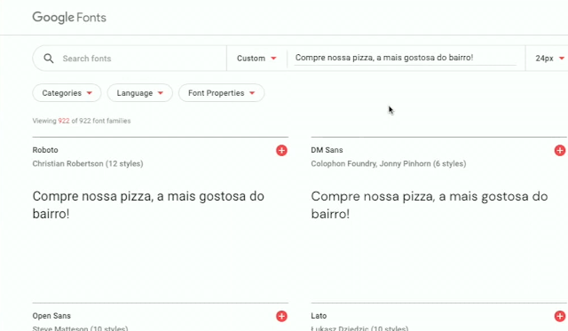
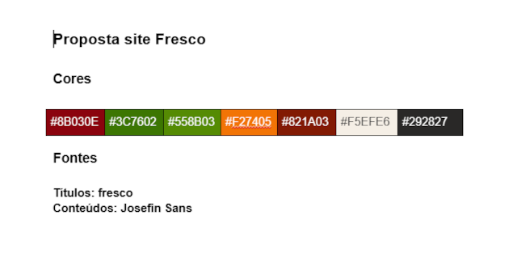

Quantas fontes é ideal usar para cada Site Desenvolvido?
O ideal é usar no máximo 2 (duas) fontes diferentes em um site. Uma fonte para os títulos e outra para o conteúdo (textos).
Acesse Google Fonts: https://fonts.google.com/
Configure em customize: "Compre nossa pizza, a mais gostosa do bairro!!!"
Pesquise uma fonte para o conteúdo e uma para os títulos. No caso, selecionamos a fonte Josefin Sans para o conteúdo e a fonte fresco para os títulos.

Para encontrar a fonte Fresco, pesquise por: Berkshire SwashO ideal é usar no máximo 2 (duas) fontes diferentes em um site. Uma fonte para os títulos e outra para o conteúdo (textos).
Josefin Sans para o conteúdo e Berkshire Swash para os títulos.Use sempre no máximo 2 fontes diferentes em um site.
Os melhores desenvolvedores de sites usam apenas 2 fontes diferentes.
